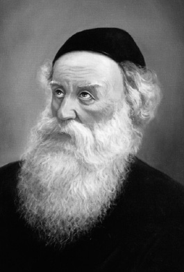

The Youngest Disciple Has the Answers
A story about the Rav HaMaggid and the Baal HaTanya, presented for the Yom Hilula of the Maggid and the Chag HaGeula of the Alter Rebbe, on 19 Kislev.

Of course, the man’s father did all he could to bring his son back. He put in much effort, but his son’s heart was closed.
Seeing this, the students of the Maggid knew they had to take a drastic step to shake the boy up, but they did not know what to do. After much thought and discussion, they decided to excommunicate him in the hopes that this would get him to repent. A cherem was an extremely serious move, something that was seldom done. However, it seemed there was no alternative. Nevertheless, they were afraid it could cause more harm than good and could push him away from Torah and Judaism forever. So they decided to ask the Maggid what they should do and sent one of the talmidim to him.
The Maggid’s face reflected the sorrow of his talmid and his brow furrowed as he thought the matter over. Finally, he looked up and quietly said, “Tonight, at midnight, I will ascend and will ask.”
The talmid, who later became a leader of thousands himself, did not need to ask further. He understood that his master’s soul would ascend and he would ask the question. There could be no better response.
The next day, he returned to the Maggid who said to him, “I was told that in this matter you should consult with Zalmanu.” He was referring to the youngest of his disciples, R’ Shneur Zalman.
The talmidim went to the Alter Rebbe and asked him his opinion. He thought it over and then wisely said, “When ten of you gather to place a cherem on the young man, when you say the word ‘cherem’ (enunciated with a Chaf), have in mind the word ‘kerem’ (enunciated with a Kaf, meaning vineyard), and not an actual cherem. In your hearts you should focus purity of thought on Hashem pouring over him a spirit from Above and that he should return to the vineyard of the house of Israel, and the remnant of Israel shall commit no iniquity. However, he himself should not know about this. When he thinks that a cherem is being placed on him, he will be frightened and repent of his corrupted ways.”
The holy students liked this idea, as it would cause the youth to be shaken up but they would refrain from the terrible punishment of a cherem. They reported to the Maggid who wondered how he, the leader of the Chassidim, did not think of such a simple idea that solved the cherem problem, when he was the successor to the Baal Shem Tov and ought to know what was right for every single individual. And why had he been directed from Heaven to hear the solution from the youngest of his students?
He thought that this might be a hint from Heaven that the time had come for him to transfer the leadership position to Zalmanu. That night, his soul ascended once again and he asked whether he should transfer the leadership of the Chassidim to R’ Shneur Zalman. He was told that once again, this was a question for R’ Zalmanu himself.
A few hours later, R’ Shneur Zalman was called to the Maggid’s room. He stood there nervously, wondering why he had suddenly been summoned. The Maggid looked at him and told him what happened, about how he considered passing the scepter of leadership to him, but when he asked in Heaven, he was told to ask Zalmanu himself.
R’ Shneur Zalman shuddered at the very thought of succeeding his Rebbe and fell in a faint. After he was roused, he said, “Rabbeinu, there is no question here at all. Of course the leadership must remain with you.”
“Then why were you the one who came up with the right idea regarding the wayward youth?” asked the Maggid.
Said the Alter Rebbe, “Because you are the Moshe of the generation and the Moshe of the generation is emes (true) and his teachings are emes, and on the level of truth there is no room for kuntzin (tricks) which are not utterly true. Whereas I …”
(I heard this from R’ MM Gluckowsky, rav of the Chabad community in Rechovot, who repeated it in the name of his father-in-law, R’ Chaim Eliyahu Mishulovin a”h who was considered a reliable source.)
Menachem Ziegelboim. "The Youngest Disciple Has the Answers." Beis Moshiach, no. 903 (November 20, 2013).